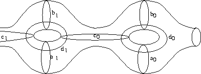
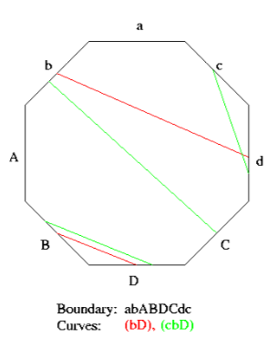

Dehn Twists
Convention: We equip our surface with an outward
pointing normal vector field. When computing a Dehn
twist with respect to a curve c, we turn right
whenever we hit c.
You can define a Dehn twist in three different ways:
- With respect to a set of standard generators: One
of the help windows displays an image of those
standard generators. A Dehn twist is determined by
the genus of the surface and a sequence of curves
(capital letters denote inverse twists).
Example: Genus: 3 Twists: d0c0d1c1d2C2

- With respect to a given fundamental domain: One
of the help windows displays an image of a fundamental
domain (the puncture corresponds to the vertices of
the fundamental domain) with two sample curves
embedded in it. If the word describing a loop consists
of more than one letter, then it must be enclosed in
parentheses. An inverse twist begins with minus sign.
Example:
Fundamental polygon: abABDCdc Twists: c-(bD)aa-b

- With respect to a given graph embedded in the
surface: The embedding of the graph is determined by
a loop in the graph (fixed up to free homotopy),
twisting curves are given as loops in the graph.
Example (same map as in 2.):
Fixed word: aBAbDcdC Twists: c-(bD)aa-b